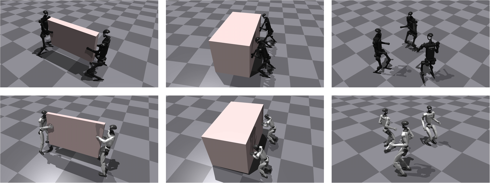
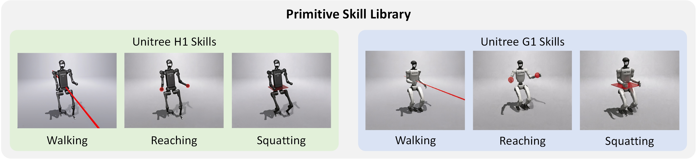

Abstract
Coordinated multi-humanoid loco-manipulation is promising yet challenging due to high-dimensional control, partial observability, and scalability issues. While recent reinforcement learning methods have improved single-humanoid whole-body control, extending them to multi-humanoid settings remains nontrivial and often requires substantial reward engineering or task-specific design.
We propose MASkillBlender, a general centralized-training-decentralized-execution framework for learning coordinated loco-manipulation among multiple humanoids. MASkillBlender equips each humanoid with a hierarchical decentralized policy that blends a set of pretrained primitive skills, substantially reducing the policy search space for coordinated whole-body loco-manipulation. To improve training efficiency, we further introduce a permutation-based data augmentation method, and theoretically demonstrate that augmented samples induce the same policy gradient as the original samples in homogeneous Markov games.
We evaluate MASkillBlender on three multi-humanoid coordination tasks across two humanoid embodiments. Extensive simulation results show that the learned decentralized policies successfully solve all tasks and produce versatile coordinated behaviors across embodiments.
Primitive Skills

Walking, Reaching, and
Squatting.